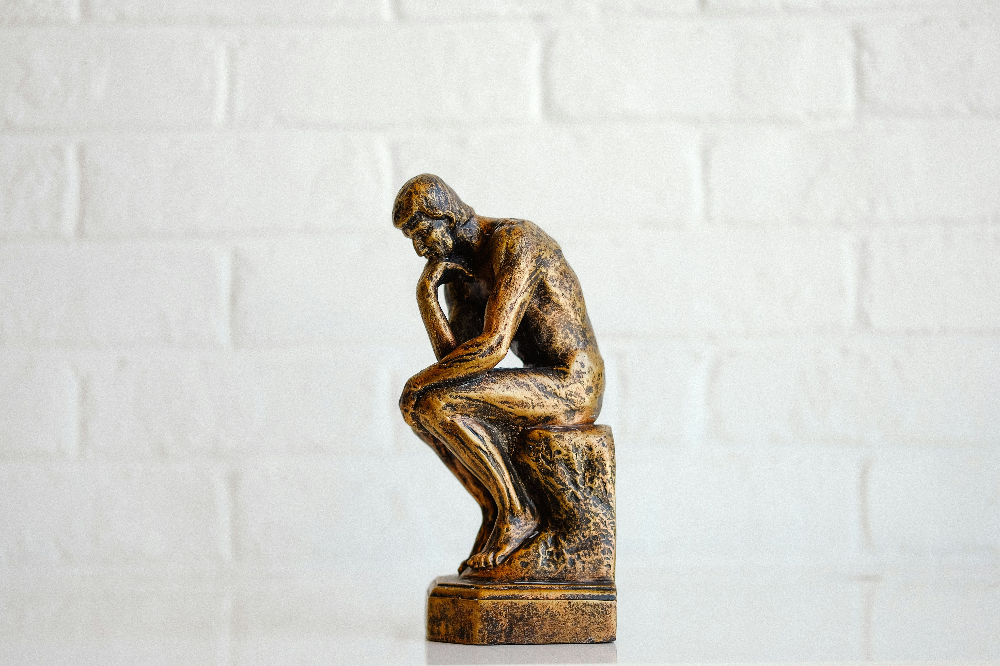
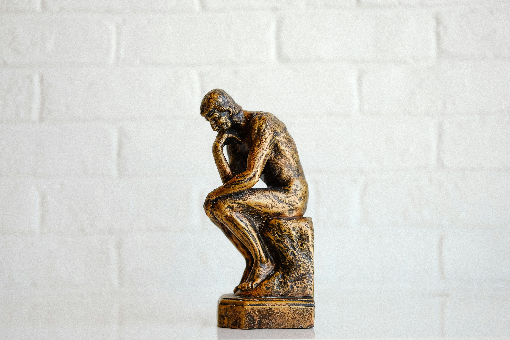

Как мы принимаем экономические решения?
Классическая экономическая теория предполагает, что человек — *homo economicus* — всегда действует рационально,
максимизируя выгоду. Однако исследования в области **поведенческой экономики** (Behavioral Economics) показывают,
что реальные решения людей зависят от эмоций, когнитивных искажений и социальных контекстов.
Несколько примеров:
🧠 Неприятие потерь (Loss Aversion)
✨ Люди испытывают боль от потерь сильнее, чем радость от эквивалентной прибыли.
Например, потеря 1000 рублей вызывает более сильные эмоции, чем выигрыш той же суммы.
[Kahneman & Tversky, 1979](теория перспектив)
🧠 Искажение оценки вероятностей
✨Мы нелогично оцениваем вероятности: переоцениваем редкие события (авиакатастрофы) и недооцениваем
частые (аварии на дорогах).
Исторический факт: Финансовый кризис 2008 года произошёл отчасти потому,
что банки и инвесторы игнорировали риски ипотечных долгов, считая крах «маловероятным»
[Akerlof & Shiller, 2009](теория перспектив)
🧠 Мы легко поддаемся влиянию социальных норм.
✨ В Швеции государство ввело автоматическую подписку на пенсионные программы, и число
участников выросло с 40% до 90%. Люди просто следовали «опции по умолчанию»[Thaler & Sunstein, 2008]
✨ В Великобритании при регистрации доноров органов система изменилась с «opt-in» (нужно
подписаться) на «opt-out» (все доноры по умолчанию, если не отказались). Это увеличило количество
доноров с 17% до 90% [Johnson & Goldstein, 2003]

 
